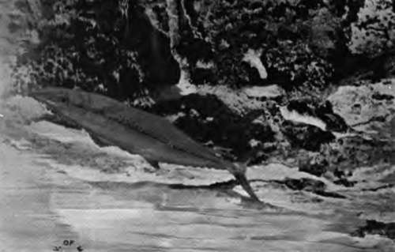
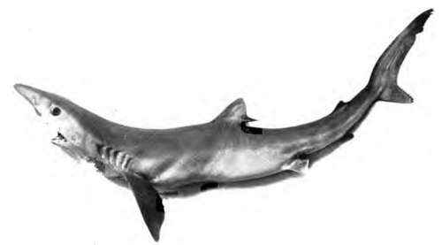
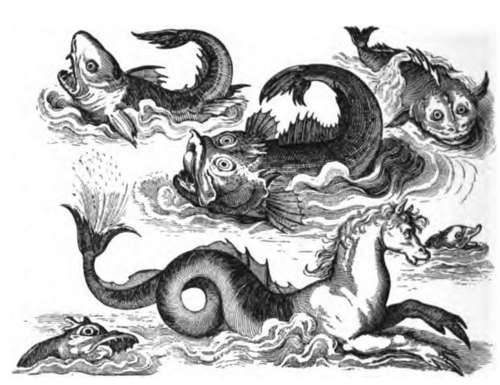
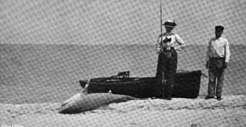
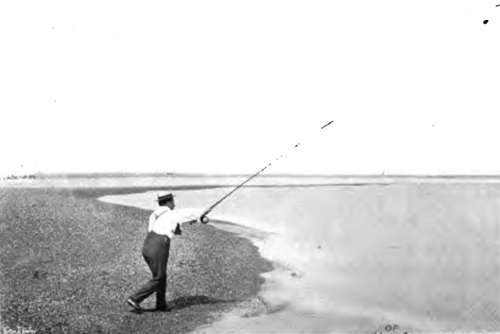
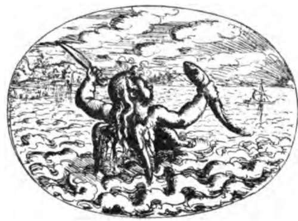

The Sharks (Carchariida)
Description
This section is from the book "Fishing", by Horace G. Hutchinson. Also available from Amazon: Fishing.
The Sharks (Carchariida)
The class fishes is divided primarily into three sub-classes: Teleostomes (the bony fishes and sturgeons), Chondropterygians (sharks, rays, chimae-ras), and Cyclostomes (lampreys and hag-fish). All the fishes previously dealt with in this work are Teleostomes, and of the division Teleosteans, which embrace the great majority of living fishes. We have now a few words to say about a very different type belonging to the second sub-class, as two forms of it, the blue shark and porbeagle, are of interest to the angler on our coasts.
Sharks, in a wide sense, may be defined as having the skeleton entirely cartilaginous or merely calcified, without bone, with the integument devoid of scales, but studded with shagreen denticles, the structure of which corresponds with that of teeth; these denticles being sometimes identical, but for size, with the teeth with which the mouth is beset; with several (5 to 7) gill-openings on each side, which are exposed or covered with frill-like folds, but always devoid of opercles, and in which the males are provided with " claspers," copulatory organs developed at the hinder margin of the ventral fins. Sharks, and their near relatives the skates, which are only much-flattened sharks with the gill-openings on the lower surface instead of on the sides, are very "old" fishes, which can be traced back to Palaeozoic times. Although primitive, or generalised, in structure, they are in many respects more highly organised than the more modern Teleo-stean fishes, and the great size to which some of them attain makes them objects of general interest.
Many species of sharks and dog-fish occur on our coasts, either as regular or accidental visitors. Among the latter, the largest is the basking shark (Selacha maxima), of which a male specimen 28 feet long, obtained near Shanklin, Isle of Wight, in 1876, is exhibited in the Natural History Museum at South Kensington.
The blue shark (Carcharias glaucus) only grows to 11 or 12 feet. It is found irregularly on all our coasts, whilst in Cornwall it is said to be abundant during the latter part of the summer and early in the autumn; it is not rare on the south coast of Ireland, where it is said to do great mischief to nets. It has an immense distribution, being found over nearly the whole of the tropical and temperate parts of the Atlantic, the Mediterranean, the Indian Ocean, and such widely remote points of the Pacific Ocean as California, Australia, and New Zealand.
The blue shark is characterised by the very long pointed snout, nearly as long as the distance between the eye and the first gill-opening, the presence of a nictitating eyelid, the pectoral fin long and falciform, extending to the dorsal, which is nearer to the ventrals than to the root of the pectorals, the tail and caudal fin long and slender; the teeth are large, and have a single sharp cusp, those of the upper jaw oblique, scarcely constricted near. the base, those of the lower jaw triangular in young examples, lanceolate, with a broad base, in old ones; the teeth of specimens about 4 feet long have a distinctly serrated border, but this serrature is lost in old examples. The upper parts are of a deep blue, the sides and the belly white, the fins dark, the pectoral nearly black.
This species is viviparous, and the young, measuring about 2 feet, are born in June, according to Couch ; the mother is said to look after her young. Extremely voracious, like all sharks, these fishes are also very tenacious of life, and Couch mentions one which, having been thrown into the sea after its liver had been removed, pursued and tried to secure a mackerel.
57.- The Spanish Mackerel.
58.- Blue Shark.
The porbeagle1 (Latnna cornubica), which grows to a length of 10 or 11 feet, is of plumper form than the blue shark, its snout is shorter, the gill-clefts are larger, the eye lacks the movable lid, the caudal peduncle bears a keel on each side, and the teeth are very different, narrower, lanceolate, and always with smooth edges, but with a small basal cusp in large examples. The fish is grey or blackish above, and white beneath.
The porbeagle is a regular summer and autumn visitor to our west coast, and specimens are frequently taken on other parts of the English coast and in Scotland, as well as in the Orkneys and Shetland. The range of distribution, though not quite so extensive as that of the blue shark, is wide enough, as besides the North Atlantic and Mediterranean the species is on record from California -where it is said to be not rare-Japan, and New Zealand. This shark is also viviparous, as many as fifteen embryos having been found in a female; but nothing precise is known of its breeding habits. It is a swifter swimmer than the blue shark, and several individuals usually join company in pursuit of the herring-shoals, which suffer greatly from its depredations; all sorts of fish and cephalopods form its food, but it is said to be partial to rough-skinned fishes, such as dog-fish and John Dories. It emits a very disagreeable smell, and its flesh is never eaten, except in Spain and Italy.
1 This name, first applied by Borlase in his " History of Cornwall," is a compound of porpoise and beagle.
Shark-fishing affords sport on the coasts of Florida and California, when there is no tarpon or tuna to be got. In these warmer seas, the monsters which attract most attention are the hammerhead (Sphyrna zygand) and the saw-fish (Pristis). The former is a shark true enough, but the latter, in spite of its general appearance, is classed in the ichthyological system with the rays, its gill-openings being entirely on the lower surface of the body.
59.- Shark Fishing In Florida
60.- Throwing From The Shore

Continue to: